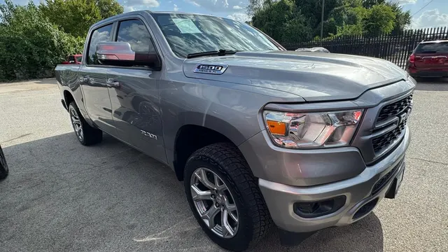

2022 Ram 1500 Big Horn
Gris • ID CCH-15

1/2Datos generales
| Año | 2022 |
| Marca | Ram |
| Modelo | 1500 Big Horn |
| Tipo | Troca |
| Color | Gris |
| Millas | 84,000 millas |
| Asientos | 5 o 6 pasajeros |
Motor y transmisión
| Motor | 3.6L Pentastar V6 eTorque |
| Potencia | 305 hp |
| Torque | 269 lb-pie |
| Transmisión | Automática de 8 velocidades |
| Tracción | Por confirmar |
| Combustible | Gasolina |
Capacidades
| Remolque máximo | 6,530 libras |
| Carga útil | 2,320 libras |
| Tanque de combustible | 23 galones |
| Rendimiento | 19 ciudad / 24 carretera |
Dimensiones
| Largo | 228.9 pulgadas |
| Ancho | 82.1 pulgadas |
| Alto | 77.6 pulgadas |
| Distancia entre ejes | 140.5 pulgadas |
Carrocería
| Cabina | Doble (Quad Cab) |
| Caja | 6.4 pies |
| Rines de serie | 18 pulgadas |
Se ve en las fotos
- Cabina doble
- Rines de aluminio
- Escape doble
- Enganche de remolque
Ideal para
Trabajo con remolque y viajes en carretera.
Ficha técnica del modelo según el fabricante y medios especializados. Confirma los datos exactos de esta unidad con el dealer.
Motor estándar del trim Big Horn según J.D. Power y fichas de Ram (3.6L Pentastar V6 eTorque: 305 hp / 269 lb-pie, automática de 8). El 5.7L HEMI V8 (395 hp) es opcional. Tracción no confirmada: RWD de serie, 4x4 opcional.
El nombre no indica cabina ni tracción; los valores corresponden a la Big Horn Quad Cab 4x4 con 3.6L eTorque (J.D. Power). El payload de 2,320 lbs es el máximo de la configuración base (MotorTrend).